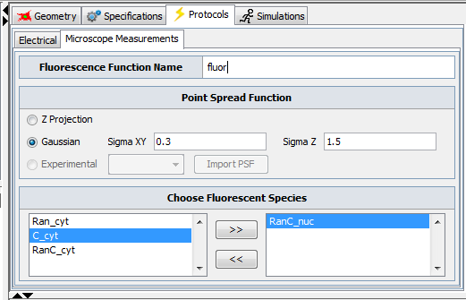

The images (species distributions over time) obtained from running simulations are ideal. Sometimes it may be useful to "enhance" these images with the distortion which would be caused by using a microscope, for example when the user would be interested in comparing simulation results with experimental images.
The Microscope measurements feature provides just that - the capacity to apply a known point spread function of a real or virtual microscope
to a simulations' result set as a post processing step.

This feature is only available for spatial deterministic applications. Inside the panel, the user can choose which species should be treated as being "fluorescent" and enter the desired point spread function attributes.
In a future release we plan to also offer the capability of directly importing airy disc experimental images.
Please check the Virtual Frap tool included in vCell for some very advanced features.